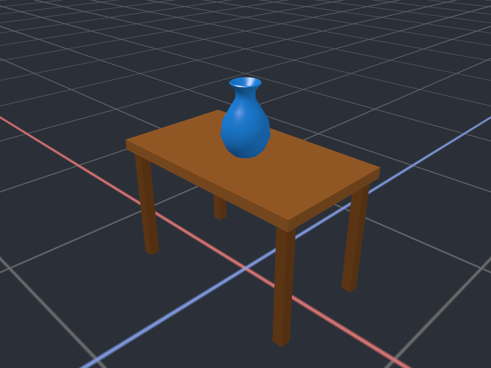

a tiny 3d modeler with no ui, made to be driven by an AI over MCP. it builds stuff from tool calls, then takes a picture.

that's a table and a vase, made with plain tool calls.
cargo build --release
then add it to your MCP client as a stdio server:
{
"mcpServers": {
"elliott-3d": { "command": "/path/to/elliott-3d" }
}
}
no gpu, no textures, no booleans. y is up.